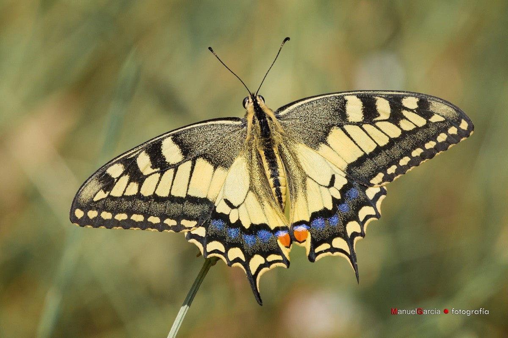

Butterflies (Rhopalocera) are insects that have large, often brightly coloured wings, and a conspicuous, fluttering flight.
Butterflies are one of the most colorfull and amazing intects that live with us, they are said to cause hurricanes due to the "Butterfly Effect"
The Butterfly Effect is an event caused by the wingbeat of a butterfly and its said to provoque big natural events.
Even the smallest things can change the world.
The butterfly is also known as the common yellow swallowtail or simply the swallowtail (a common name applied to all members of the family, but this species was the first to be given the name). It is the type species of the genus Papilio. This widespread species is found in much of the Palearctic (it is the only swallowtail in most of Europe) and in North America.
 IMAGES AND CURIOSITIES